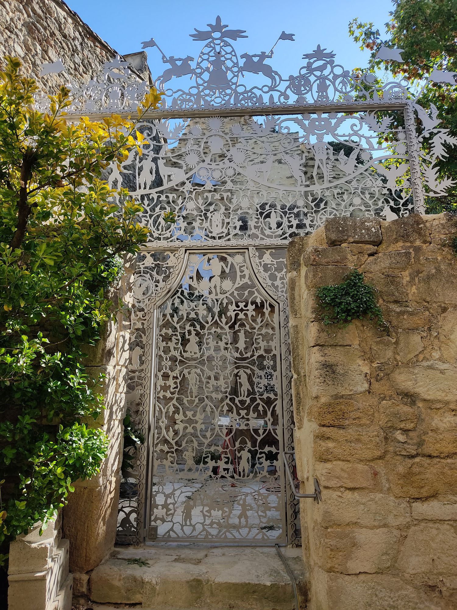

02 — COMMANDE ARTISTIQUE
Les transformations de 2026
En 2026, dans le cadre des célébrations du 400e
anniversaire de la naissance de la marquise de Sévigné,
l'ancien four banal a connu une transformation artistique
avec l'installation d'une œuvre réalisée par Hélène Delprat.
Celle-ci a été inaugurée le 19 septembre 2026, à l'occasion
des Journées européennes du patrimoine, dont le thème officiel
était « Patrimoine en péril : raviver, résister, réinventer ».
L'ensemble comprend notamment une « Chambre de lecture »
ainsi qu'un portail monumental dont l'iconographie, marquée
par des motifs macabres et démoniaques, a été jugée par
certains habitants comme pouvant être associée au satanisme.
Cette intervention a profondément modifié l'apparence
et l'aménagement intérieur de l'ancien four banal, suscitant
des interrogations sur le rapport entre l'œuvre, l'histoire
du lieu et la préservation du patrimoine.

L'ancien four banal après son intervention artistique en 2026